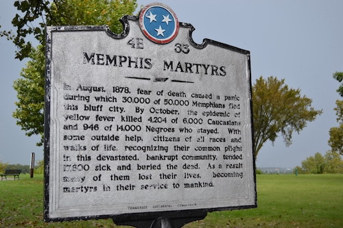
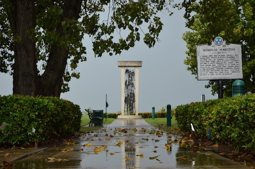

First victim of Memphis yellow fever epidemic dies
History.com Editors
September 12, 2020
On August 13, 1878, Kate Bionda, a restaurant owner, dies of yellow fever in Memphis, Tennessee, after a man who had escaped a quarantined steamboat visited her restaurant. The disease spread rapidly and the resulting epidemic emptied the city. Yellow fever, which is carried by mosquitoes, originally came from West Africa and was brought to the United States on slave ships. The disease requires warm weather to survive and thrives in wet and hot summers when mosquitoes can breed prodigiously. After a three-to-six-day incubation period, an afflicted person feels flu-like symptoms such as fever and aches. After a very short remission, a more intense stage often follows, during which the victim vomits blood and suffers liver and renal failure. Jaundice is also a typical symptom, which is how yellow fever got its name. If a victim dies, it usually happens within two weeks. Survivors can feel the effects for months.
In the 19th century, it was not known that mosquitoes carried yellow fever. New York City, Philadelphia and New Orleans all experienced serious epidemics that spread rapidly and killed thousands. Memphis, a city of 50,000, had outbreaks in 1855, 1867 and 1873, with each outbreak getting progressively worse. Those who came down with yellow fever were quarantined in an effort to prevent the disease from spreading. Often, they were made to wear yellow jackets as a means of identification. In July 1878, an outbreak of yellow fever was reported in Vicksburg, just south of Memphis. Memphis officials reacted by stopping travel to the city from the south. However, William Warren, a steamboat worker, somehow slipped away and into Kate Bionda’s restaurant on the shore of the Mississippi on August 1. The next day he needed hospitalization and was sent to President’s Island for quarantine, where he died. Kate Bionda, the first Memphis resident to get yellow fever, died on August 13. After that, yellow-fever infections spread quickly throughout Memphis.
Most of the residents who were able to fled the city. Twenty-five thousand people picked up and left within a week. For the most part, it was the African American residents who remained in town, although they died at a much lower rate than the white residents who contracted the disease. An average of 200 people died every day through September. There were corpses everywhere and near continual ringing of funeral bells. Half of the city’s doctors died.
The epidemic ended with the first frost in October, but by that time, 20,000 people in the Southeast had died and another 80,000 had survived infection. In the aftermath, open sewers and privies were cleaned up, destroying the breeding grounds for mosquitoes and preventing further epidemics.
Today, yellow-fever outbreaks still occur in Africa and South America.
